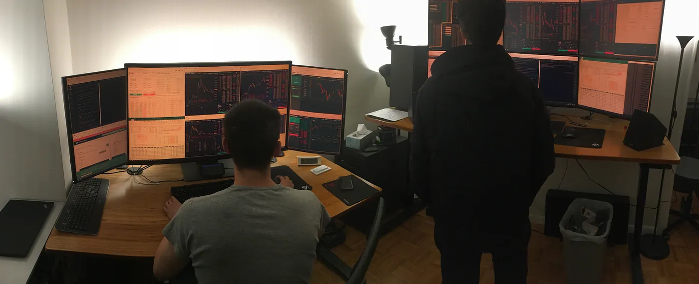
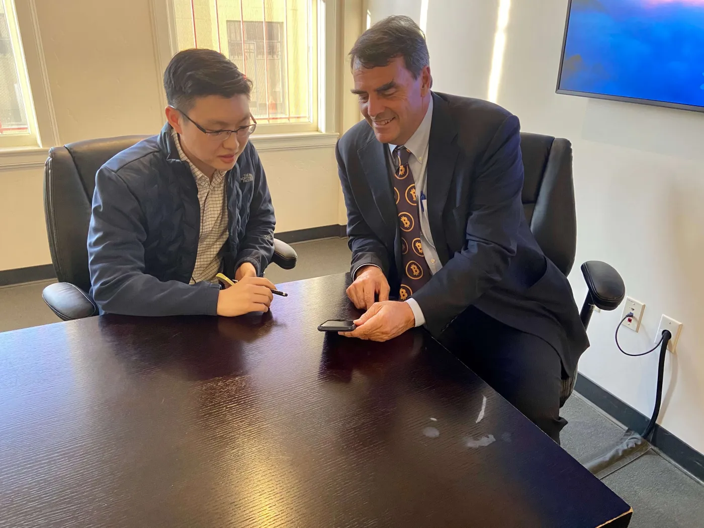
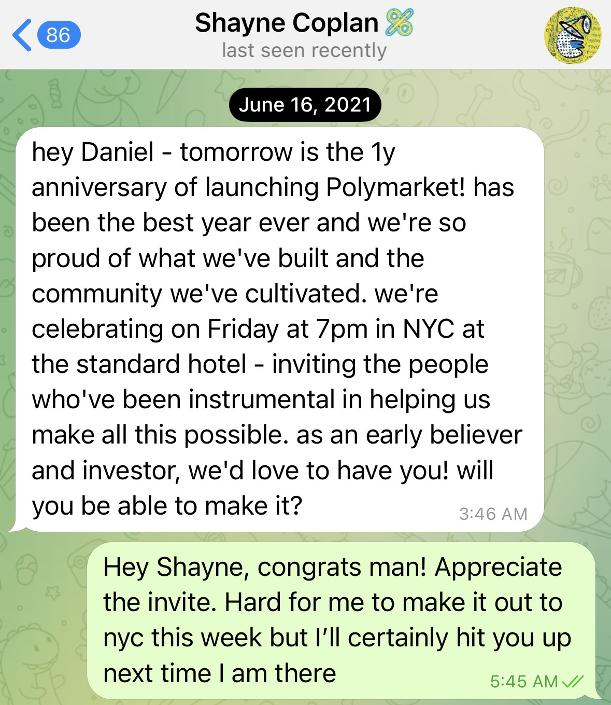

About Me
Hi, I'm Daniel. Some call me Sangyoon. I was born in the U.S., but
spent most of my life in South Korea 🇰🇷 and Singapore 🇸🇬.
On my
Substack
✍🏼, I write about fundamental investing. Topics include
philosophies and observations, as well as my positions in crypto
venture, technology stocks, or value stocks, all through the lens
of concentrated value investing. Occasionally interspersed are
tidbits of my personal life.
Working in venture capital, I've been fortunate to observe
innovative businesses from the earliest stages. As a bootstrapped
founder, I've achieved a 7-figure outcome and raised venture
funding for another.
When I'm not going down rabbit-holes and writing, you can find me
playing tennis 🎾. When I'm alone, I love playing Chopin or movie
soundtracks on the piano 🎹, though I need to start learning some
new pieces again. I enjoy trying new types of coffee ☕ (I was a
Starbucks barista in my teens), and aim to be half-vegetarian,
since I'm not brave enough to go full-on just yet.
That's a little bit about me. But if you'd like to learn more
about how I got here in the first place, come join me below.
Wall Street
Ever since taking a summer camp course in middle school called
"Who is Dow Jones?", I fell in love with the art of investing. I
particularly enjoy that it rewards independent, contrarian
thinking and an even temperament. I chose to attend NYU Stern for
their undergraduate finance program, but deferred by a year to
take a value investing course and pore through books like "The
Intelligent Investor" at the local library.   
During college, I took advantage of being in NYC to intern at
three different hedge funds, grateful that such institutions would
even take a student who knew nothing. After graduating, I started
as an investment banking analyst. In some ways, I was living the
life - early 20s in the heart of New York, exploring hobbies, and
hosting poker games in our apartment with my two housemates.
We also found ourselves chained to our desks on many weekends.
While banking was touted to be a good stepping stone to greater
things, I didn't see how it was making me a better investor,
particularly a long-term investor hoping to build real businesses.
It was in the midst of this environment, wondering what more there
was to life, that I discovered cryptocurrencies.
Crypto arbitrage
Long story short, I started arbitraging inefficient crypto
markets. This was 2017 when the market was rife with
inefficiencies.
At the time, crypto was booming. Booming so much that there
was a 30-50% spread between Korean and American crypto prices.
The opportunity was so blatant that everybody was talking
about it, yet nobody thought to actually trade it. Why? I
don't know. I asked a lot of people, and they didn't think it
was possible because of this regulation or that blocker.
With a little investigation, I sorted out the legal and trade
mechanics and was making $15,000 every single day, with just a
few clicks. This was possible because I identified the
opportunities, stayed abreast of developments, moved fast,
managed risk, and pulled all-nighters to do the grunt work
from talking to lawyers to setting up trades — all while
working a 70-80 hour / week job…
After this interesting incident, a few friends and I decided
to arbitrage the price differentials among exchanges... The
trading was run from our tiny NYC bedroom, with rotating
sleeping schedules to keep an eye on the markets 24/7. At one
point, our portfolios were worth a couple million dollars. It
was unbelievable for 23-year-olds whose bank accounts had
never seen anything remotely like it. Needless to say, it was
an exciting time. -
Medium: How I Made $15,000 / Day as a Fresh College Grad
I would move to the Bay Area in 2018, at age 24, to write a book
and make a Wikipedia for crypto. Hundreds of projects with
technical jargon were popping up every day, where even someone
full-time like myself would get lost in it all. I saw an
opportunity to help people cut through the noise and understand
why this technology mattered.

 Crypto Wiki, the site I built to explain crypto projects in
plain language. Click to enlarge.
To me, crypto is an equalizing force. Imagine every time you rode
an Uber, you earned equity in the company. That's a small example
of what crypto rails make possible. On Ethereum, you can access
loans from a decentralized protocol with just an internet
connection, not gated by income, ethnicity, or social status. With
DePIN systems like Helium, I am both a consumer and owner in the
mobile network I use.
Crypto Wiki, the site I built to explain crypto projects in
plain language. Click to enlarge.
To me, crypto is an equalizing force. Imagine every time you rode
an Uber, you earned equity in the company. That's a small example
of what crypto rails make possible. On Ethereum, you can access
loans from a decentralized protocol with just an internet
connection, not gated by income, ethnicity, or social status. With
DePIN systems like Helium, I am both a consumer and owner in the
mobile network I use.
Venture with Tim Draper
By good fortune, mutual connections put me in touch with venture
capitalist Tim Draper. I thought he was the most down to earth,
fun investor I'd ever seen, and wanted to learn everything I could
from him. For context, he was a billionaire VC and founder of
venture capital firm DFJ, and presently, Draper Associates. As it
pertains to crypto, he made news for buying the 30,000 bitcoins
from the Silk Road government auction in 2014, being one of the
first prominent figures to lend credibility to the space.
Paradoxically over time, I felt simultaneously more involved and
more on the sidelines. I missed being a player on the field.
Building Nest
To wrap up my years of self-taught programming, I
did a coding bootcamp
(three months of living and breathing code), after which some old
friends convinced me to co-found a startup with them. One had sold
his last startup to Bitgo, and was itching to do something new.
I'd happily raise the funding, but on two conditions - that I
would work as a full-time software engineer, and be off to
business school after helping them get to the series A. Why
school? I knew I wanted to eventually work in investing where
school would be a good transition point, plus you only live once
so why not.
Luckily, I rounded up $3.6M in one month, after which the funding
market swiftly crashed. It was very lucky timing. I was grateful
to have entrepreneurs I respected like the founders of Youtube,
Twitch, OrangeDAO (Y-Combinator spinoff for crypto) and many
others as investors.
We built a prototype of a
multi-signature wallet
and won 1st place in a hackathon hosted by Coinbase and Stripe.
Unlike existing multisig wallets, you could connect to any dapp
through the browser. Some companies were interested in acquiring
the technology and having us build in-house.
My co-founder then pivoted the business into an altcoin-trading
wallet — the third sudden change in direction. I left disagreeing,
as did the CTO later. Because the company was small yet
profitable, he sought full control and attempted to restructure
ownership, diluting us to near zero. I was able to legally block
this, but he later relaunched the company under a new name to take
entire ownership. At that point, I decided to let it go. While it
wasn’t the ending I hoped for, the experience taught me some
invaluable lessons - to evaluate partners' ethics early on, and to
avoid equal ownership structures in future ventures.
Columbia Business School
Today, I am doing my MBA at Columbia University in the Value
Investing Program - a cohort of 40 students selected to
concentrate on this field. One day, I hope to run 1) a public
value portfolio, 2) private venture portfolio, and longer-term, 3)
an operating business, all under one roof.
The curtains are closing on my 20s, and I'm looking forward to
what my 30s will bring. I hope to have more adventurous stories
for you then. Until next time.
- Daniel Sangyoon Kim